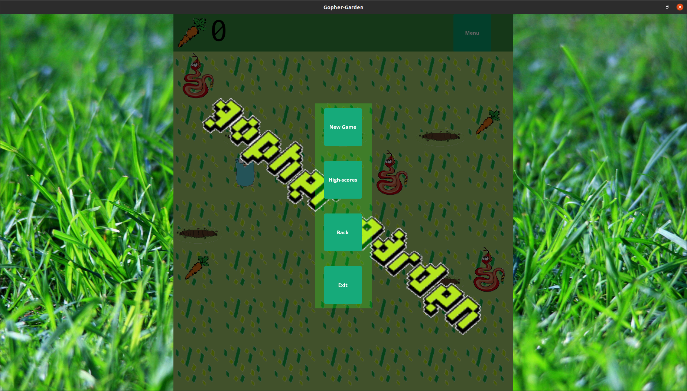

For more information please see the github page.

Gopher-Garden is a 2D game in which you control Garry the Gopher who moves around a garden and who's goal is to eat as many carrots as he can whilst avoiding deadly snakes which are in constant roam around the garden.
Gopher-Garden is written entirely in Go 1.14 and uses Gio, a portable immediate mode GUI implemented in Go and developed by Elias Naur, for graphics and user-input.
Gopher-Garden will save all highscores and the user-names that correspond to them in a local file who's data can be viewed through the in-game menu. Do not edit the highscores.txt file because it can erroneate the parsing and cause the program to panic.
'Space' or 'e' -> Move Garry into a gopher hole.
When Garry moves into a gopher hole he will pop out at a random one of the other gopher holes. Garry can only move into a gopher hole if his last move was not a gopher hole move.
'Menu' -> On click this button will take you from your current game round into the menu and pause your current game round. Note: If you access the menu in the middle of your game round and you do not resume to that game, your score for that game will NOT be recorded. The menu button can be accessed at all times. When you die however, the continue button acts as an alternative to the menu button which saves your game data.
(The following buttons can only be accessed while in the menu.)
For a complete installation of Gopher-Garden, please perform the following steps.
If the latest version of Go is not already installed on your machine, please follow the system-specific instructions to do so here.
Once the latest version of Go is installed, please install the system-specific dependencies to run Gio applications here.
Once these preliminary steps are complete, Gopher-Garden can be installed. It would be simpler to use modules and have go run the main package remotely hosted, however because highscores are saved in a local file, this is not an option. To install Gopher-Garden it is necessary to install the repository on your local machine and this can be done via cloning the repository or downloading the code.
go run main.goThis game is based off of the Go gopher which was designed by Renée French and is licensed under Creative Commons Attribution 3.0.
A detailed list of image credits can be found in CREDITS.
Gopher-Garden is licensed under BSD-3-Clause License. For more information see LICENSE.